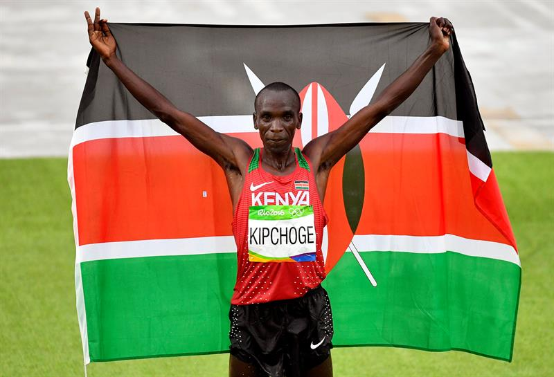
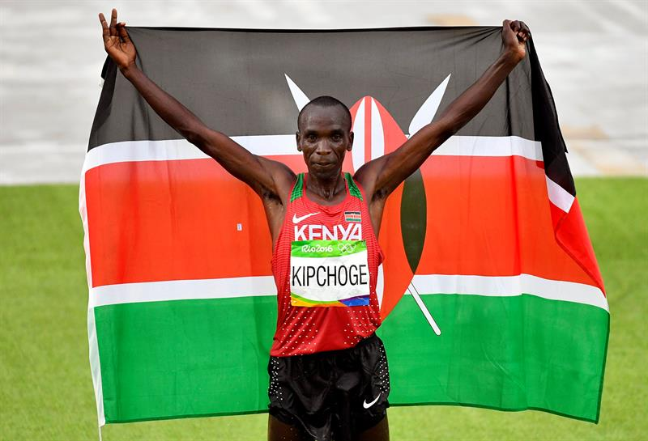

ESPORTE
"Seja individual, seja em equipe, os esportes estão entre as principais atividades físicas praticadas pelo homem moderno. Segundo pesquisa do Ministério do Esporte do Brasil, realizada em 2013, quase metade dos brasileiros que praticam atividades físicas é adepta de algum esporte. Há várias versões que explicam a origem dos esportes.
Um pouco da história
Alguns historiadores afirmam que as primeiras manifestações esportivas aconteceram na Grécia Antiga, enquanto outros acreditam que, antes que o esporte se tornasse uma atividade comum, os guerreiros divertiam-se com a cabeça de um dos vencidos na guerra, e esse hábito grotesco evoluiu para práticas esportivas. As modalidades dos esportes mais comuns variam conforme a região, pois as condições climáticas influenciam bastante a prática.
Na China, por exemplo, o esporte mais popular é o tênis de mesa; na Austrália, é o rúgbi; no Quênia, é o atletismo; e no Canadá, o hóquei no gelo. Já no Brasil a paixão nacional é o futebol, uma das práticas esportivas mais populares do mundo." Veja mais sobre "Esportes" em: https://brasilescola.uol.com.br/educacao-fisica/esportes.htm

 
